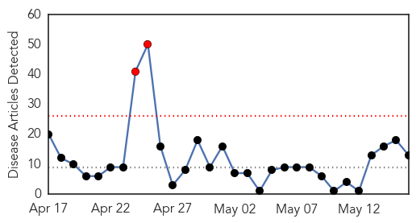

30 Day Trends
Web: 2 alerts, 0 warnings
Twitter: 0 alerts, 0 warnings
Top Articles:
- 0.999
- Second MERS case confirmed in Netherlands
- 0.986
- Outbreak in Ohio adds to 18-year high of measles cases in U.S.
- 0.964
- Ohio measles outbreak spreads to record level
- 0.963
- Detroit Free Press
- 0.903
- Measles alert at Stuartholme Catholic girls’ school
- 0.866
- Epidemiologist Says Measles Outbreak Under Control
- 0.843
- Is measles cure far off for other cancer patients?
- 0.811
- Chickenpox hits young cancer patient, despite vaccination
- 0.766
- Pakistan: Is Pakistan losing the battle against measles?
- 0.734
- Officials confirm case of measles in Bay State
- 0.589
- Valley Morning Star : Autism
- 0.545
- Doctors urging East Tennesseans to get measles shots
- 0.543
- Modified measles virus targets and destroys cancer, study says
Top Tweets:
-
No tweets found for May 16, 2014
Web/News Articles
Tweets

Article Locations

Article Confidences